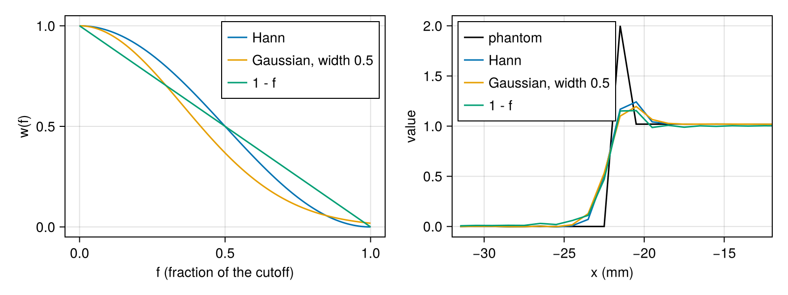
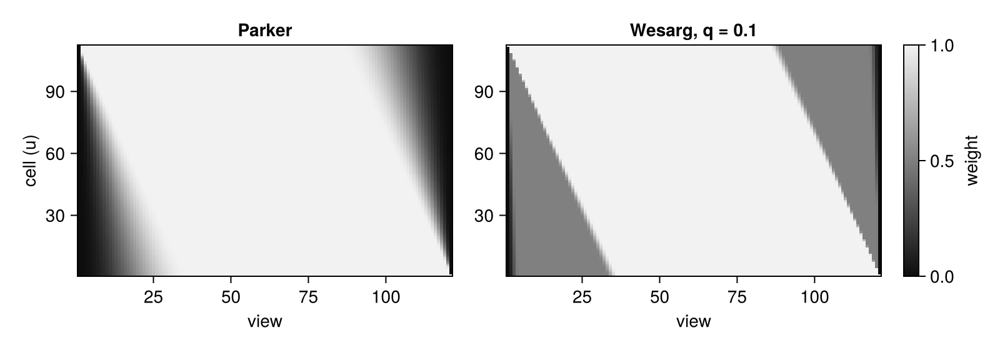

Write FDK Windows and Weights
FDK takes the window of its ramp filter and the weighting of lines measured more than once as keywords, and both accept your own: a window is any function of the frequency, a weighting is an AbstractRedundancy. This guide passes a window of its own, weights computed by another package, and a weighting type of its own. Reconstruct with FDK shows the built-in choices; Filtered Back Projection explains the filter.
using CTOperators, ImagePhantoms, Sinograms, CairoMakie, LinearAlgebra, Random
using ImageGeoms: axis
using ImagePhantoms: ellipsoid_parametersThe phantom and the scan of Reconstruct with FDK: the 3D Shepp-Logan phantom in 64 × 64 × 48 voxels of 1 mm, 180 views over one turn with a flat detector.
image = ImageGeom(; dims=(64, 64, 48), deltas=(1.0, 1.0, 1.0))
x_true = Float32.(phantom(axis(image, 1), axis(image, 2), axis(image, 3),
ellipsoid(ellipsoid_parameters(; fovs=(64, 64, 48))), 2))
geometry = circular_cone_beam(; angles=range(0, 2pi, 181)[1:180], dso=200, dsd=400, nu=112, nv=64, du=2.0)
y = JosephProjector(image, geometry) * x_true
relative_error(x) = round(norm(x - x_true) / norm(x_true); sigdigits=3);A window of your own
The keyword window takes a function w(f) of the frequency f as a fraction of the cutoff (0 ≤ f ≤ 1); the ramp is multiplied by w(f), and frequencies above the cutoff are set to 0. Any callable works, also a struct with parameters, here a Gaussian of a given width:
struct GaussianWindow
width::Float64
end
(w::GaussianWindow)(f) = exp(-(f / w.width)^2)
x_gauss = CTOperators.fdk(image, geometry, y; window=GaussianWindow(0.5))
x_hann = CTOperators.fdk(image, geometry, y; window=:hann)
x_linear = CTOperators.fdk(image, geometry, y; window=f -> 1 - f);The windows over the frequency, and a profile through the axial slice in the middle, along x:

The profile shows the left edge of the skull. The relative errors of the volume:
[(window=name, error=relative_error(x)) for (name, x) in (("Hann", x_hann), ("Gaussian, width 0.5", x_gauss), ("1 - f", x_linear))]3-element Vector{@NamedTuple{window::String, error::Float32}}:
(window = "Hann", error = 0.203)
(window = "Gaussian, width 0.5", error = 0.219)
(window = "1 - f", error = 0.214)Weights computed elsewhere
ArrayRedundancy takes the weights as arrays: one per data element, of the data size or with dimensions of length 1 for "the same for all", and one per view. Sinograms.jl computes Parker weights for its short scans with parker_weight, of size (ns, 1, na): one per detector column and view, the same for all rows. Each view is weighted with its angle step. The geometry of Sinograms.jl converts with projection_geometry:
rg = CtFanFlat(:short; ns=112, nt=64, ds=2.0, dt=2.0, na=180, dsd=400.0, dod=200.0)
sinograms_scan = projection_geometry(rg)
y_sinograms = JosephProjector(image, sinograms_scan) * x_true
angle_step = deg2rad(rg.orbit / rg.na) # orbit in degrees
redundancy = ArrayRedundancy(parker_weight(rg), fill(angle_step, rg.na))
x_sinograms = CTOperators.fdk(image, sinograms_scan, y_sinograms; redundancy)
(views=rg.na, error=relative_error(x_sinograms))(views = 106, error = 0.225f0)ParkerWeights rejects this scan: its views end one angle step before half a turn plus the fan angle. Only the sizes of the arrays are checked.
A weighting type of your own
A weighting that depends on the scan is a subtype of AbstractRedundancy with two methods: redundancy_weights(r, scan, geometry) runs once on the host, checks the scan and returns the object the kernel needs, and the weight of each view; redundancy_weight(weight, geometry, iu, iv, k) runs in the kernel for every data element. The object must be usable on the device: with arrays, give it an Adapt.adapt_structure method, and it moves to the device with adapt(storage, weight).
The example is the weighting of Wesarg et al. (2002, Eq. 12–17) for short scans, with a parameter q; q = 1 gives Parker's weights. From the CircularScan, the kernel object takes for every view the angle beta from the first view and two directions in the plane of the orbit: the central ray and the direction across it (towards larger angles). The fan angle of a cell follows from its ray, cell_ray.
using Adapt
using CTOperators: AbstractRedundancy, CircularScan, redundancy_weights, redundancy_weight, cell_ray
struct WesargWeights <: AbstractRedundancy
q::Float64
end
struct WesargWeight{V,M}
beta::V # per view the angle from the first view
central::M # 3 x nviews: the central ray
across::M # 3 x nviews: perpendicular to it, in the plane of the orbit
delta::Float32
q::Float32
end
Adapt.@adapt_structure WesargWeightWesarg's S-shaped step (Eq. 13), from 0 at -1/2 to 1 at 1/2
step_s(t) = t <= -0.5f0 ? 0.0f0 : t >= 0.5f0 ? 1.0f0 : (1 + sinpi(t)) / 2step_s (generic function with 1 method)the ramp in the region measured first (Eq. 16), B = 2 (delta - gamma) its height in beta
function wesarg_rho(beta, gamma, w)
height = 2 * (w.delta - gamma)
height <= 0 && return 1.0f0 # the outermost cell at the last view: weight 0 there
width = w.q * height
(step_s(beta / width - 0.5f0) + step_s((beta - height) / width + 0.5f0)) / 2
endwesarg_rho (generic function with 1 method)the weight of every measurement (Eq. 12): the ramp, 1 where a line is measured once, and the complement of the ramp of the other measurement
function wesarg_omega(beta, gamma, w)
beta < 2 * (w.delta - gamma) && return wesarg_rho(beta, gamma, w)
beta < Float32(pi) - 2 * gamma && return 1.0f0
1 - wesarg_rho(beta - Float32(pi) + 2 * gamma, -gamma, w)
end
dot_column(d, m, k) = d[1] * m[1, k] + d[2] * m[2, k] + d[3] * m[3, k]
function CTOperators.redundancy_weight(w::WesargWeight, geometry, iu, iv, k)
a, b = cell_ray(geometry, Float32(iu), Float32(iv), k)
d = b - a
gamma = atan(dot_column(d, w.across, k), dot_column(d, w.central, k))
wesarg_omega(Float32(w.beta[k]), Float32(gamma), w)
end
function CTOperators.redundancy_weights(r::WesargWeights, scan::CircularScan, geometry)
# the view weights, and the check of the scan, as for Parker's weights
_, views = redundancy_weights(ParkerWeights(), scan, geometry)
orientation = scan.angles[end] > scan.angles[1] ? 1 : -1
across = reduce(hcat, [orientation * cross(scan.axis, c) for c in eachcol(scan.central)])
delta = (abs(scan.angles[end] - scan.angles[1]) - pi) / 2
beta = Float32.(abs.(scan.angles .- scan.angles[1]))
WesargWeight(beta, Float32.(scan.central), Float32.(across), Float32(delta), Float32(r.q)), views
end;The arrays of the kernel object are on the host here; FDK moves them to its device with adapt(storage, weight). With q = 1, the reconstruction and that with ParkerWeights agree to the rounding of Float32. The scan covers half a turn plus the fan angle of the outermost cell centers (111 mm from the center of the detector, 400 mm from the source):
fan = atan(111 / 400)
short = circular_cone_beam(; angles=range(0, pi + 2fan, 121), dso=200, dsd=400, nu=112, nv=64, du=2.0)
y_short = JosephProjector(image, short) * x_true
x_parker = CTOperators.fdk(image, short, y_short; redundancy=ParkerWeights())
x_q1 = CTOperators.fdk(image, short, y_short; redundancy=WesargWeights(1.0))
norm(x_q1 - x_parker) / norm(x_parker)1.4346813f-7The weights of the middle detector row for Parker's weights and Wesarg's with q = 0.1:

Wesarg et al. compare the two weightings on noisy data. Here, with noise added to the data (normal, standard deviation 1 % of the largest line integral): noise is the difference of each reconstruction from that of the data without noise, error that of the data without noise.
Random.seed!(1)
y_noisy = y_short .+ 0.01f0 * maximum(y_short) .* randn(Float32, size(y_short))
function compare(name, r)
clean = CTOperators.fdk(image, short, y_short; redundancy=r)
noisy = CTOperators.fdk(image, short, y_noisy; redundancy=r)
(weights=name, noise=round(norm(noisy - clean) / norm(clean); sigdigits=3), error=relative_error(clean))
end
[compare("Parker", ParkerWeights()), compare("Wesarg, q = 0.1", WesargWeights(0.1))]2-element Vector{@NamedTuple{weights::String, noise::Float32, error::Float32}}:
(weights = "Parker", noise = 0.0208, error = 0.225)
(weights = "Wesarg, q = 0.1", noise = 0.0204, error = 0.222)References:
- S. Wesarg, M. Ebert, T. Bortfeld, "Parker weights revisited", Med. Phys. 29(3), 372–378, 2002.
This page was generated using Literate.jl.